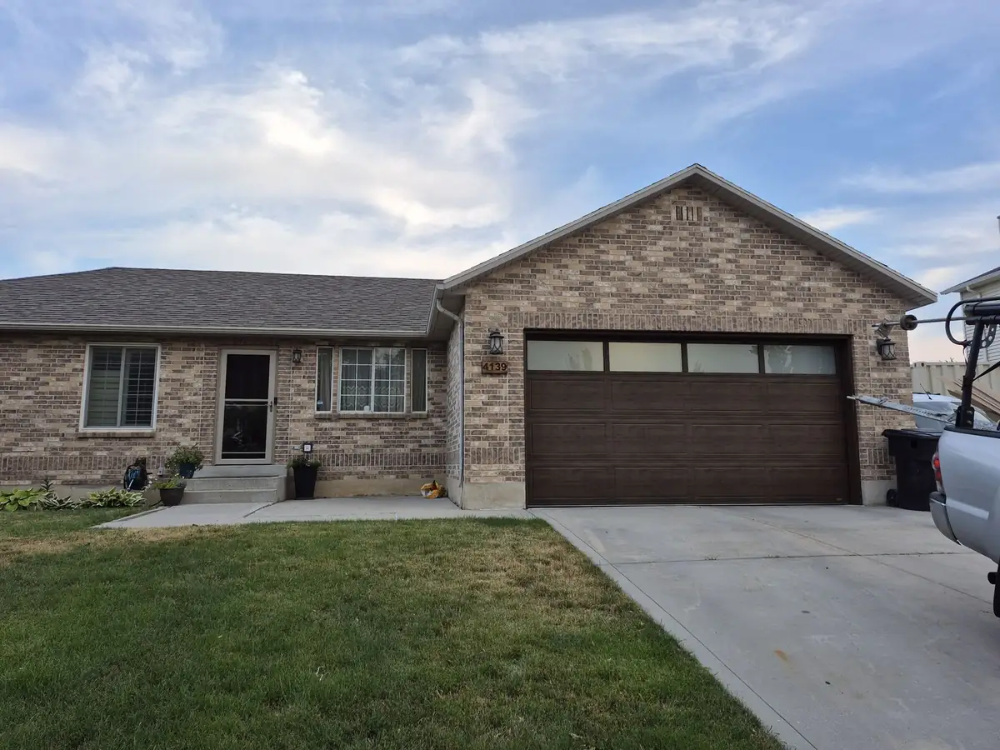
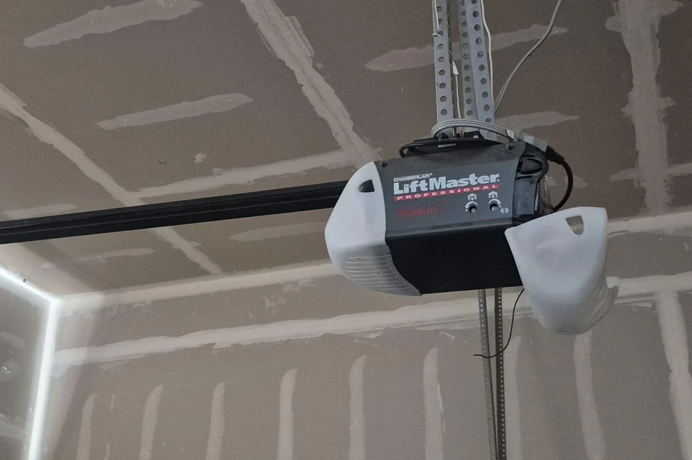

Murray · Center of the Valley
Garage Door Repair in Murray, Utah
Murray has some of the oldest neighborhoods in the Salt Lake Valley, and garages to match. We repair and replace doors on homes of every era, from the historic downtown to newer infill.
Licensed & Insured Utah Contractor
Based in West Jordan
5 Star Google Rating
Open 24 Hrs Mon to Thu
Local Service in Murray
Older homes, older garages
Murray sits in the middle of the valley, with I-15, I-215, and State Street running through it. Its historic districts include homes built from the late 1800s through about 1950, and much of the rest of the city filled in during the following decades. That history shows in the garages: detached single car garages, converted carports, narrow openings, and doors that have never had an opener are all common.
Landmarks show how central Murray is: Murray Park with its amphitheater and rose garden, the restored 1938 Murray Theater on State Street, Wheeler Historic Farm on 900 East, Fashion Place Mall, and the Intermountain Medical Center campus. Three TRAX stations and a FrontRunner station connect the city.
We come to Murray from West Jordan, east across the Jordan River. We work on the old and the new alike, from older garages whose framing and headroom don't fit standard hardware to newer townhomes and infill houses with modern openers. If you're not sure what kind of springs or opener you have, a quick photo of the top of the door when you call helps us bring the right parts.

Serving ZIP 84107, 84117, 84121 & 84123
What makes Murray garages different
Low headroom and narrow openings
Older detached garages often have less room above the door than modern hardware expects. Low headroom track and wall mounted openers are made for this, and we'll measure and tell you what fits.
Doors that were never automatic
Plenty of Murray garages still have manual doors. If the door is solid and balanced, adding an opener with safety sensors is straightforward. A heavy or damaged door may need repair first.
Freeze thaw on older doors
Murray winters bring repeated freeze thaw cycles that crack old weatherstripping and swell wood doors. Replacing the seals and the bottom rubber keeps water and drafts out.
Townhomes and shared walls
Newer townhomes and infill homes often have tight garages with openers close to living space. Belt drives and nylon rollers keep noise down for you and your neighbors.
Garage door repair services in Murray
New openers for manual doors, including wall mount options for tight garages.
Garage Motor & Opener RepairMurray garage door repair FAQ
Do you work on detached garages?
Yes. Detached garages are common in Murray's older neighborhoods, and we repair and replace their doors, springs, and openers the same way we do attached garages.
My garage has very little room above the door. Can I still have an opener?
Often, yes. Wall mounted openers sit beside the door instead of on the ceiling, and low headroom track can help. We'll measure and let you know what will work.
Do you serve all of Murray?
Yes, every Murray ZIP code, including 84107, 84117, 84121, and 84123, from the Jordan River east toward Holladay and Cottonwood Heights.
Can I replace the door on a historic home without changing its look?
Carriage house style steel doors can give an older home a traditional look with modern insulation and hardware. If your home is in a historic district, check whether any local rules apply before changing the exterior.
Garage door repair near Murray
Murray's in the middle of the valley, so these are all close. See every city on our service areas page.
Murray garage door repair: call Quick Fix
Old door, no opener, or a spring that just went? Call us for a free estimate.
(801) 641-6850Mon to Thu: open 24 hours · Fri: 12 AM to 8 PM · Sat & Sun: 5 AM to 4 PM